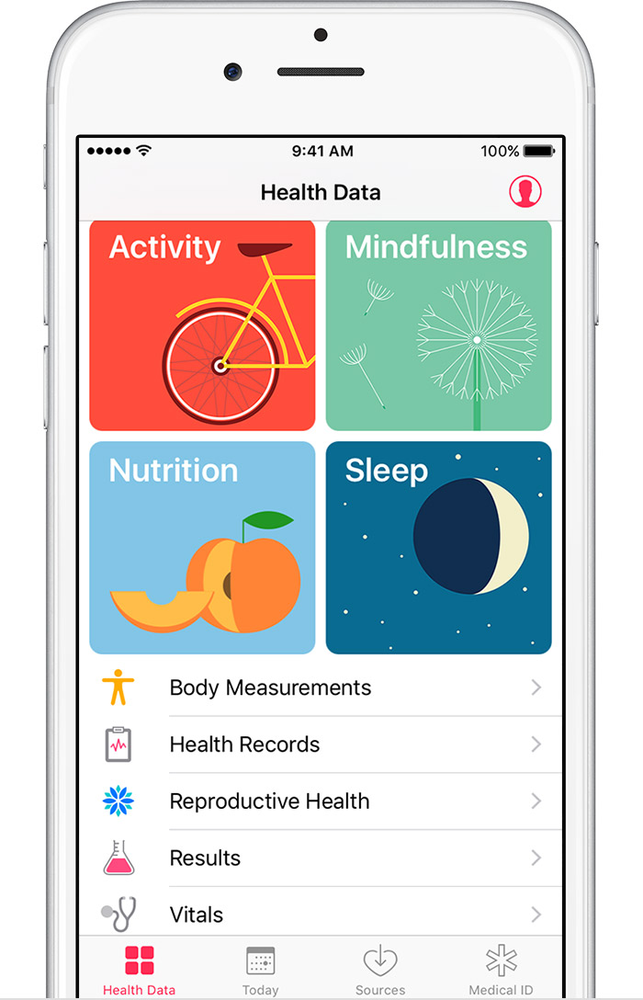
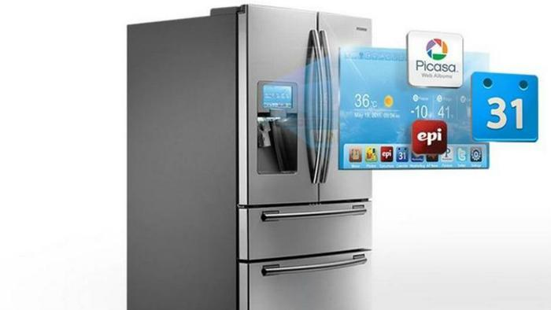

SWOT Analysis for RFID Smart Refrigerators
|
Strengths
|
Weaknesses
|
- It's a very new technology
- Track food inventory and alert when food is near expiration
- Screen provides useful information
- Could save money spent on groceries over time by reducing waste
- Networks with owner's existing technology
|
- RFID tags are not placed on many food items currently
- Software and Applications will take time to develop due to product's novelty
- High cost of production
- High price of consumption
|
|
Opportunities
|
Threats
|
- Will work well with current health trends
- Companies working with this technology have disposable income to develop
- Other applications and upgrades can be produced as supplementary products
- Novelty - consumers love new ideas
|
- Investment costs are ongoing and large
- Current workforce may not be capable of producing on a large scale
- Susceptible to security threats because they are networked devices
|
In Summation...
Above is a brief SWOT Analysis that I did regarding RFID Smart Refrigerators. Although refrigerators
have been released over the past few years that have smart components, such as a touch screen display, and
networking capability, this analysis is aimed at RFID Smart Refrigerators specifically. In conclusion, the
technology isn't where it needs to be yet to make these a reality in the average home any time soon, but they will
become more prevalent as other technologies expand and reduce production and investment costs.

